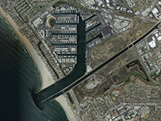

Example of how to make a map that will be the real world size.
Requirement: Tileset Control
Usage instructions:
Add this script to map GameObject.
Add this script to map GameObject.
RealTilesetSizeExample.cs
/* INFINITY CODE 2013-2016 */
/* http://www.infinity-code.com */
using UnityEngine;
namespace InfinityCode.OnlineMapsExamples
{
[AddComponentMenu("Infinity Code/Online Maps/Examples (API Usage)/RealTilesetSizeExample")]
public class RealTilesetSizeExample : MonoBehaviour
{
private void Start()
{
// Initial resize
UpdateSize();
// Subscribe to change zoom
OnlineMaps.instance.OnChangeZoom += OnChangeZoom;
}
private void OnChangeZoom()
{
UpdateSize();
}
private void UpdateSize()
{
// Get distance (km) between corners of map
Vector2 distance = OnlineMapsUtils.DistanceBetweenPoints(OnlineMaps.instance.topLeftPosition,
OnlineMaps.instance.bottomRightPosition);
// Set tileset size
OnlineMaps.instance.tilesetSize = distance * 1000;
// Redraw map
OnlineMaps.instance.Redraw();
}
}
}